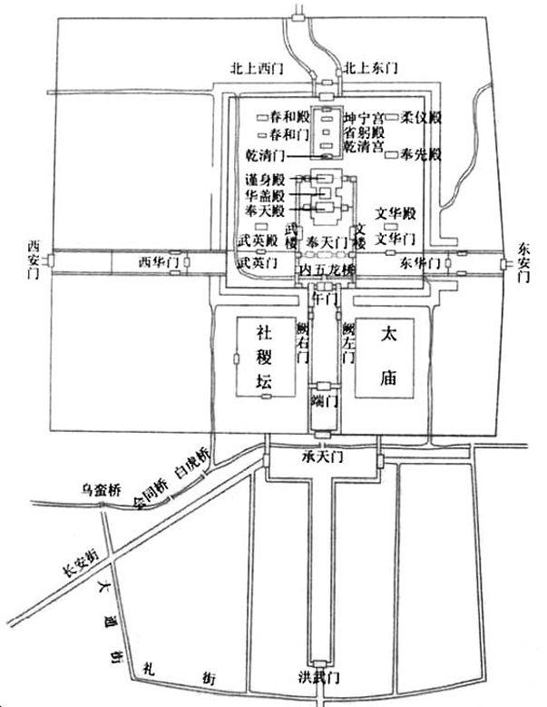
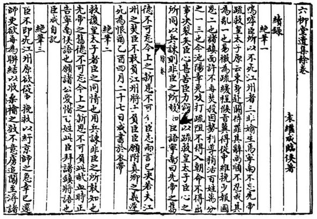

九
似乎古人还没有什么政治保密意识；抑或事涉太子，朱由崧轻易不敢造次。总之，我们不知该说他不乏诚意，还是缺心眼儿，反正很不注意封锁消息，以致满城皆知：“都人初闻太子来京，踊跃请谒，文武官投职名者络绎。”[61]情形一旦如此，朱由崧又后悔当初措施失当，临时传旨，“谕文武官流行私谒，自此众不得见。”[62]
进城之初，把太子安排在南京兴善寺，但当天即“中夜移太子入大内”。[63]大内，便是洪武门以内。为何移往大内？显然与禁止私谒的命令配套；如不变换住址，只怕禁令也不能尽阻设法与太子相见的人。而且是连夜更换，更透出紧张与诡秘；白天，由于可以随便拜见太子，惹出了一些事。比如曾在北京旧宫当差、前去探望的张姓和王姓两位太监：
一见太子，即抱定大恸，见天寒衣薄，各解衣以进。上闻之大怒，曰：“真假未辨，何得便尔！太子即真，让位与否，尚须吾意，这厮敢如此！”遂掠二竖俱死。[64]
提到洪武门，又想起大悲。这疯和尚许久未提，我们似乎把他忘了，现在却应交代一下——与太子到南京同日，三月初一甲申，“僧大悲伏诛”。[65]你说巧不巧，热闹不热闹，紧凑不紧凑？天下承平，人可以闲得发慌；而终末之世，往往葫芦满缸，摁下一个浮起一个，到处出事，接踵而至，顾头不顾腚。
第二天，朱由崧组织大臣“面试”太子，地点是武英殿。其中有曾在北京东宫担任讲官的刘正宗、李景濂，还特地从狱中调出因“从逆案”在押、也曾为太子授读的前少詹事方拱乾。能够采取这种姿态，应该说已算较为透明、公开，起码不是掩人耳目。但诸史却都透露背后有些内幕。朱由崧预先召见过刘正宗和李景濂，讲了一句话：“太子若真，将何以处朕？卿等旧讲官，宜细认的确。”刘正宗这样回答：“恐太子未能来此，臣当以事穷之，使无遁词。”[66]言语都很含蓄，效果却是心照不宣。朱由崧作此想，充分可能；远的不论，本朝即有“夺门之变”的殷鉴。至于方拱乾的工作，据说是阮大铖死党、吏部尚书张捷出面来做：“方至，捷曰：‘先生恭喜，此番不惟释罪，且可以不次超擢。’”[67]
面试结果，是个假太子。由于事先有部署，面试结果于太子不利是可以预计的。但我们得说，还偏偏并非周密安排所致。太子本身漏洞太多，一些基本事实，比如，“讲书何地？讲何书？习何字？答多不符。”[68]所答完全不对。也有答对的，比如太子在紫禁城所居之宫，坤宁宫乃皇后宫室，以及一见到方拱乾即将其认出等。但我们发现，凡答对的，皆可事先做功课。各宫位置，可通过图纸默识于心；轻易认出方拱乾，是因为他有突出的形象——茂密的须髯，而刘正宗、李景濂缺乏明显相貌特征，就完全不认得。
情势急转直下。三月初三深夜，太子被请出大内，再次换了居所，目的地是兵马司监狱。这意味着，他从座上宾沦为嫌犯：
初三夜更余，肩舆送太子入狱。时已醉，狱中有大圈椅，坐其上即睡去。黎明，副兵马侍侧，太子问：“何人？”以官对。太子曰：“汝去，我睡未足。”良久，问兵马曰：“汝何以不去？”兵马应曰：“应在此伺候。”又问：“此何地？”曰：“公所。”又问：“纷纷去来何人？”曰：“道路。”又问：“何故皆蓝缕？”兵马未及答，太子曰：“我知之。”[69]

南京紫禁城布局。
最下方，就是洪武门，亦即《续幸存录》所称大悲和尚“夜叩”之门。

袁继咸密奏。
左良玉以“太子案”起兵，江督袁继咸斡旋之际，将情形连连书于衣带，奏报朝廷。袁继咸同时表明态度：“宁南以疏救皇太子，臣心之所同。以兵谏，则非臣之所敢知。”他也完全相信王之明是真的。
相当精彩的场景刻画，单纯以对话，传摹环境、气氛、心理、各人姿态，丝丝入扣，海明威之能不过如此。
这时，出现了一个说法。“杨维垣扬言于众曰：‘驸马王昺侄王之明，貌甚类太子。’给事中戴英即袭其语，入奏言：‘王之明假冒太子，请敕多官会审。’”[70]杨维垣和阮大铖一样，崇祯初名列逆案，如今复职通政司，为《三朝要典》翻案甚力；又恰在三月初二当天，升都察院左副都御史[71]。特于此时委以重任，由他提出太子乃王之明假冒之说，恐怕不是偶然的。但他有何依据，比如，自己认识或曾见过王之明，还是别的什么理由，却一点也不清楚。总之，目前得出两个结论：一、太子是假的；二、假冒太子的人，名叫王之明。
以下，我们不再称太子，姑且也称王之明。